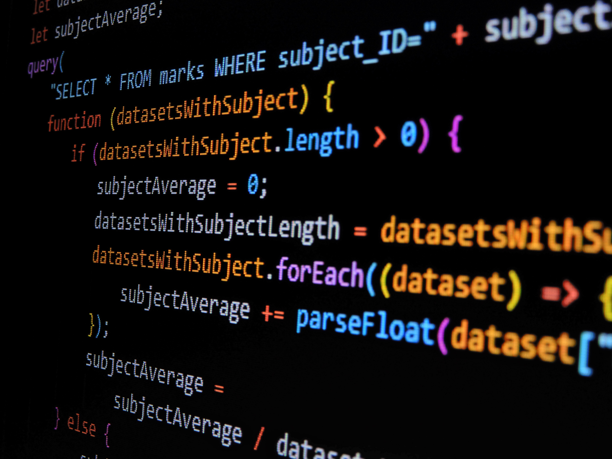

Proyecto Interno con .NET y React
Me encuentro trabajando en el desarrollo de un sistema interno utilizando .NET, React, Entity Framework y SQL Server. Dentro de este entorno participo en funcionalidades relacionadas con la firma digital GDE aplicada a fojas de conceptos, colaborando en procesos de desarrollo, integración y mantenimiento. Debido a que se trata de una plataforma interna con información clasificada, no es posible compartir imágenes ni detalles específicos, pero esta experiencia me permite seguir creciendo en backend, frontend, base de datos y mejora de soluciones orientadas a procesos reales.